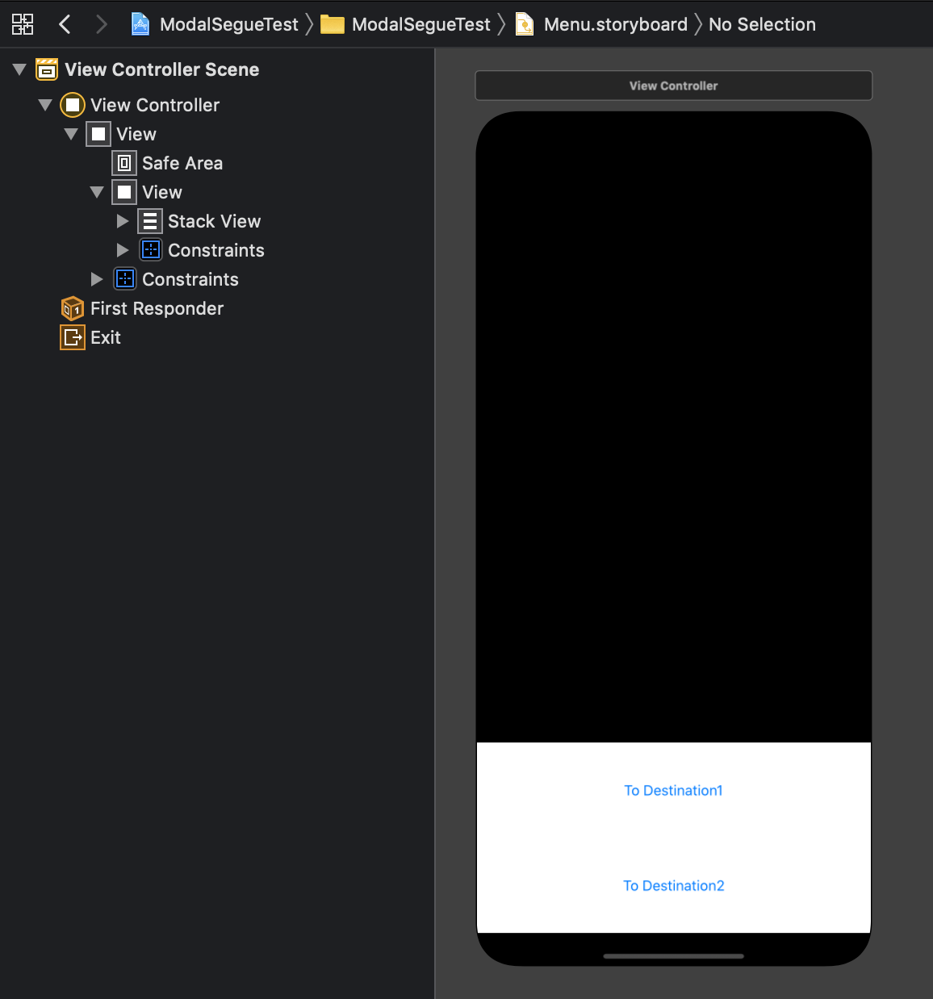
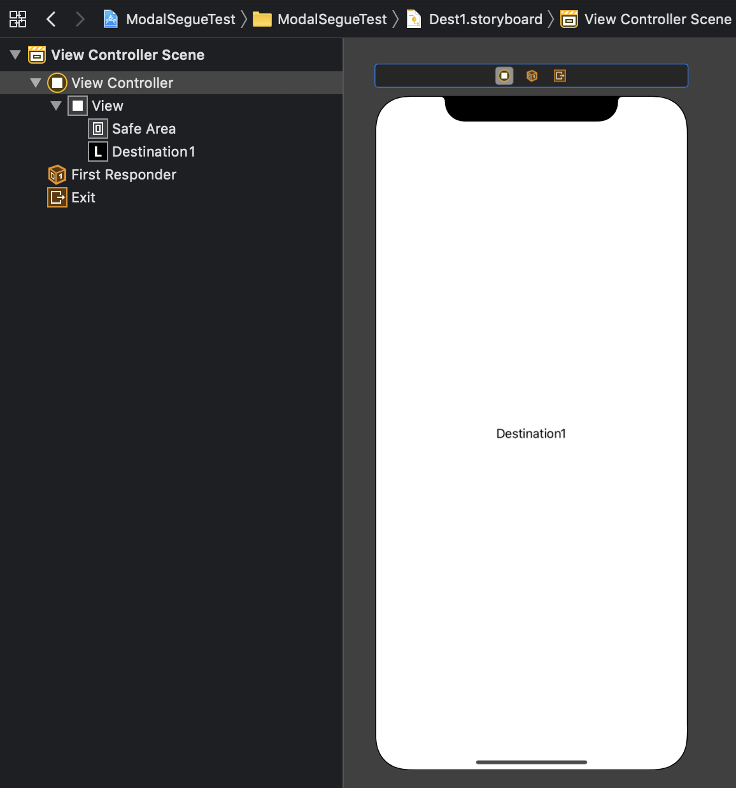
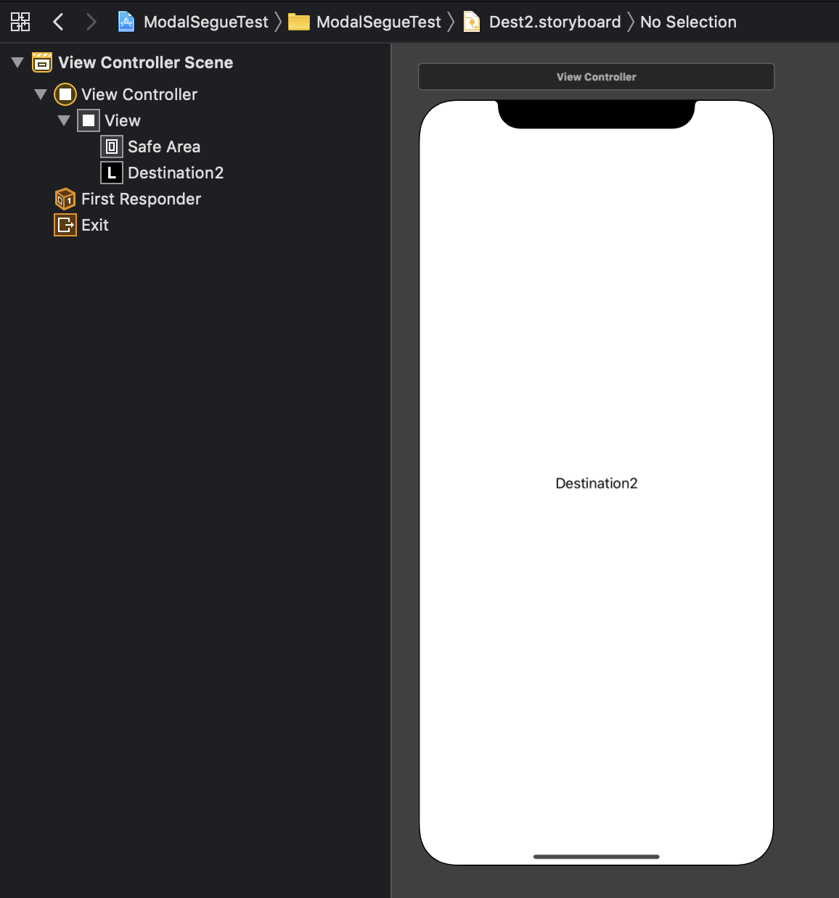
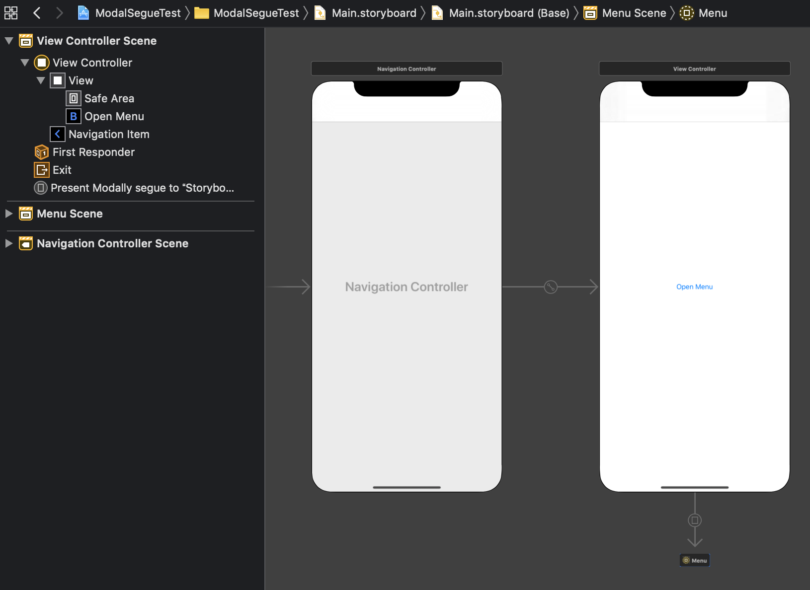
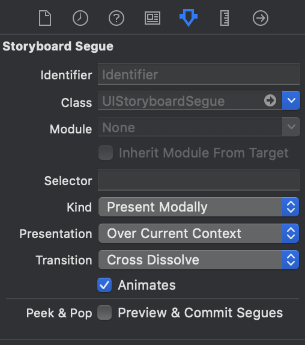
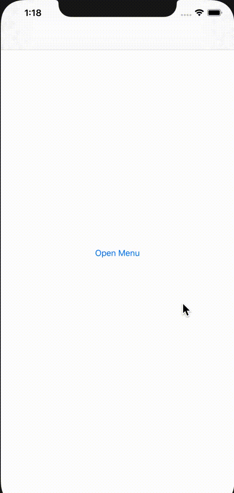
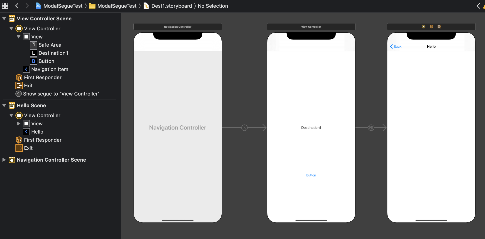
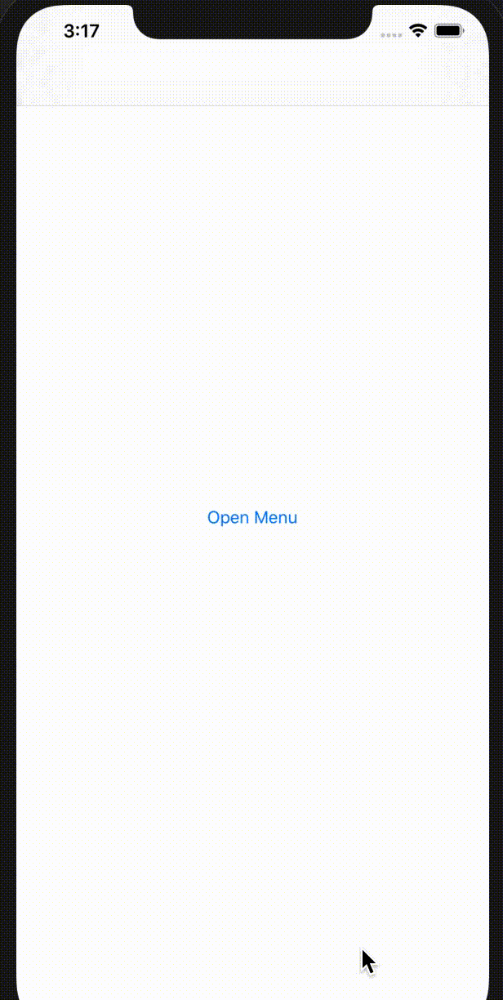

目標
- セミモーダルビューを作成する
- セミモーダルビュー上のボタンを押すと、それを閉じた後に別ビューに遷移する。
登場物
Main.storyboardとViewControllerMenu.storyboardとMenuViewControllerDest1.storyboardDest2.storyboard
前提
- 今後Viewが増えていく状況を想定して、Storyboardを分割することを考える。Storyboard同士はStoryboard Referenceで結びつける。
セミモーダルビューの作成
検索して良く出てくるのはUIPresentationControllerを利用する方法。ただ今回はなるべくStoryboardで完結させたい。
そこで、以下のページを参考して作ることを考える。
ハンバーガーメニューを作成するには？ - Swift Life
ファイル作成
Menu.storyboard、MenuViewController、 Menu.storyboard、Dest1.storyboard、 Dest2.storyboardの5つをあらかじめ作成しておく。
classにはMenuViewControllerを指定する。部品配置は以下のようにする。
全体を包むViewを親View、その中に作ったViewを子Viewと呼ぶことにすると、
- Constraintは適当に設定する。子Viewが画面下に配置されるようにする。
- StackViewにはFill Equallyの設定を行っておく。
- 親Viewの背景色を、黒の半透明に設定する。設定手順は以下の通り。
- BackgroundをBlackに設定
- BackgroundをCustomに設定し直すと、カラーピッカーが現れる。そこで透明度を50%に設定する。
また、“Initial View Controller"にチェックをつける。
親Viewのtagを1に設定しておく。これはタッチイベントを捕捉する際に必要になる。

Dest1.storyboard、Dest2.storyboard
Dest1.storyboardの部品配置は以下のようにする。
“Is initial View Controller"にチェックをつける。

Dest2.storyboardの部品配置は以下のようにする。
“Is initial View Controller"にチェックをつける。

Main.storyboard
部品配置は以下のようにする。

OpenButtonからStoryboard ReferenceへのSegueのActionは"Present Modally"を選択。Segueの設定は以下のようにする。

Storyboard Referenceにて、“Storyboard"をMenuに、“Referenced ID"を未記入にする。
“Referenced ID"が未記入の場合、Storyboard上のInitial View Controllerへの参照にしてくれる。もしInitial View ControllerでないViewControllerに遷移したいなら、ここに記入する。ただし、遷移先のView ControllerにてIdentifierを設定しておくことを忘れずに。
Menu.storyboardの小ViewのOutletを作成する。名前はmenuViewとする。
その上で以下の文を追記する。
class MenuViewController: UIViewController {
...
override func viewWillAppear(_ animated: Bool) {
super.viewWillAppear(animated)
let menuPosY = menuView.layer.position.y
menuView.layer.position.y += menuView.layer.frame.height
UIView.animate(
withDuration: 0.5,
delay: 0,
options: .curveEaseOut,
animations: {
self.menuView.layer.position.y = menuPosY
},
completion: nil)
}
override func touchesEnded(_ touches: Set<UITouch>, with event: UIEvent?) {
for touch in touches {
if touch.view?.tag == 1 {
UIView.animate(
withDuration: 0.2,
delay: 0,
options: .curveEaseOut,
animations: {
self.menuView.layer.position.y += self.menuView.layer.frame.height
}) { bool in
self.dismiss(animated: bool, completion: nil)
}
}
}
}
}
dismissメソッドを使うと自身のビューを閉じることができる。

モーダルビューを閉じてから遷移する処理
モーダルビュー上で直接Segueを作りたいところだが、そうするとモーダルビューの上にDestinationのViewが乗ってしまう。モーダルビューを閉じてから、Mainの方で遷移するように処理を書かなくてはいけない。
MenuViewController.ktにて、Menu.storyboardにあるボタン"To Destination1"と"To Destination2"のActionを設定する。それぞれの関数の実装を以下のようにする。
@IBAction func dstOneTapped(_ sender: Any) {
let navController = presentingViewController as! UINavigationController
dismiss(animated: true) {
let sb = UIStoryboard(name: "Dest1", bundle: nil)
guard let vc = sb.instantiateInitialViewController() else {
print("View Controller is not found.")
return
}
navController.pushViewController(vc, animated: true)
}
}
@IBAction func dstTwoTapped(_ sender: Any) {
let navController = presentingViewController as! UINavigationController
dismiss(animated: true) {
let sb = UIStoryboard(name: "Dest2", bundle: nil)
guard let vc = sb.instantiateInitialViewController() else {
print("View Controller is not found.")
return
}
navController.pushViewController(vc, animated: true)
}
}
MenuViewControllerを表示しているのは、Main.storyboardで定義されたNavigation Controllerである。これは試しにprint(presentingViewController)してみると分かる。従って、presentingViewControllerはUINavigationControllerにダウンキャストしている。
こうして得られたnavControllerについて、pushViewControllerメソッドを利用して遷移する。ビューを閉じた後に遷移したいから、dismissメソッドのcompletion引数にこの処理を書いている。ちなみに、dismissのcompletion内にnavControllerの宣言を書くと実行時エラーを起こすことに注意。なぜならcompletionの中では、presentingViewControllerはnilを返すから。completionはViewが破棄された後に呼ばれる関数。
instantiateInitialViewControllerで、Storyboard上のInitial View Controllerを作る(Storyboardで"Is initial view controller"にチェックをつけた理由はこれ)。InitialじゃないView Controllerを作りたいなら、instantiateViewControllerを利用する。このとき、遷移先のView Controllerにidentifierを設定しておくことを忘れないように。
遷移先のStoryboardににNavigation Controllerを持たせたい場合
遷移先がNavigation Controllerの場合、Navigation Controllerのルートに遷移するように書くだけ。Navigation ControllerをNavigation Controllerにpushしようとすると実行時エラーを吐かれるので注意。
Dest1.storyboardの変更
部品構成を以下のようにする。
- NavigationItemのtitleをHelloに変更すると、上部にHelloが表示されるようになる。
ルートのView Controller(ラベルDistination1が書かれているもの)のidentifierをdest1に設定する。

メソッドdstOneTappedを以下のように変更する。
@IBAction func dstOneTapped(_ sender: Any) {
let navController = presentingViewController as! UINavigationController
dismiss(animated: true) {
let sb = UIStoryboard(name: "Dest1", bundle: nil)
let vc = sb.instantiateViewController(withIdentifier: "dest1")
navController.pushViewController(vc, animated: true)
}
}
ここで、let vc = sb.instantiateViewController(withIdentifier: "navigation controllerのID")と書いてはいけない。Navigation Controllerの中にNavigation Contollerをpushすることはできないため、pushViewControllerの呼び出し時にエラーになる。

その他の知見
この記事では利用しなかったが、大事そうな知見をここにまとめておく
Segueにおける値渡し
遷移元のViewControllerにて、prepare(for segue: UIStoryboradSegue, sender: Any?)関数をoverrideする。特定のSegueに対して値を渡したい場合は、segue.identifierでif文を書けば良い。
override func prepare(for segue: UIStoryboradSegue, sender: Any?) {
if segue.identifier == "Storyboard上で設定したSegueのidentifier" {
let vc = segue.destination
// vcに何か値を渡す処理
}
}
参考文献
ハンバーガーメニューを作成するには？ - Swift Life